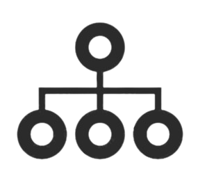

<mat-sidenav-container fullscreen>

  <mat-sidenav #sidenav mode="over" [ngStyle]="{ width: '250px' }" >
    <mat-toolbar>
      
      <span>TaskFlow</span>

      <span class="spacer"></span>

      <button mat-icon-button
              (click)="sidenav.toggle()">
        <mat-icon>close</mat-icon>
      </button>
    </mat-toolbar>

    <mat-nav-list>
      <a routerLink="/tasks/tasks"
         mat-list-item
         (click)="sidenav.toggle()"
         >
        <div class="d-flex flex-row align-items-center">
          <span class="pt-1 pe-2"><mat-icon mat-list-icon>list_alt</mat-icon></span>
          <span>Tasks</span>
        </div>
      </a>

      <a routerLink="/tasks/users"
         mat-list-item
         (click)="sidenav.toggle()">
         <div class="d-flex flex-row align-items-center">
            <span class="pt-1 pe-2"><mat-icon mat-list-icon>people</mat-icon></span>
            <span>Users</span>
        </div>
      </a>
    </mat-nav-list>
  </mat-sidenav>

  <mat-toolbar class="shadow">
    <button mat-icon-button (click)="sidenav.toggle()">
      <mat-icon>menu</mat-icon>
    </button>

    <div class="ms-3">
      
      <span class="title-header">TaskFlow</span>
    </div>

    <span class="spacer"></span>

    <button mat-button (click)="signOut" class="fs-6">
      Sign Out
    </button>
  </mat-toolbar>

  <div>
    <router-outlet></router-outlet>
  </div>

</mat-sidenav-container>

<!-- <mat-sidenav-container fullscreen> -->

<!-- <mat-sidenav #sidenav mode="push" [ngStyle]="{ width: '250px' }" > -->
  <!-- <app-sidenav [sidenav]="sidenav"></app-sidenav> -->
  <!-- <app-sidenav></app-sidenav> -->
<!-- </mat-sidenav> -->

<!-- <app-header [sidenav]="sidenav"></app-header> -->
<!-- <app-header></app-header> -->

<!-- </mat-sidenav-container> -->
